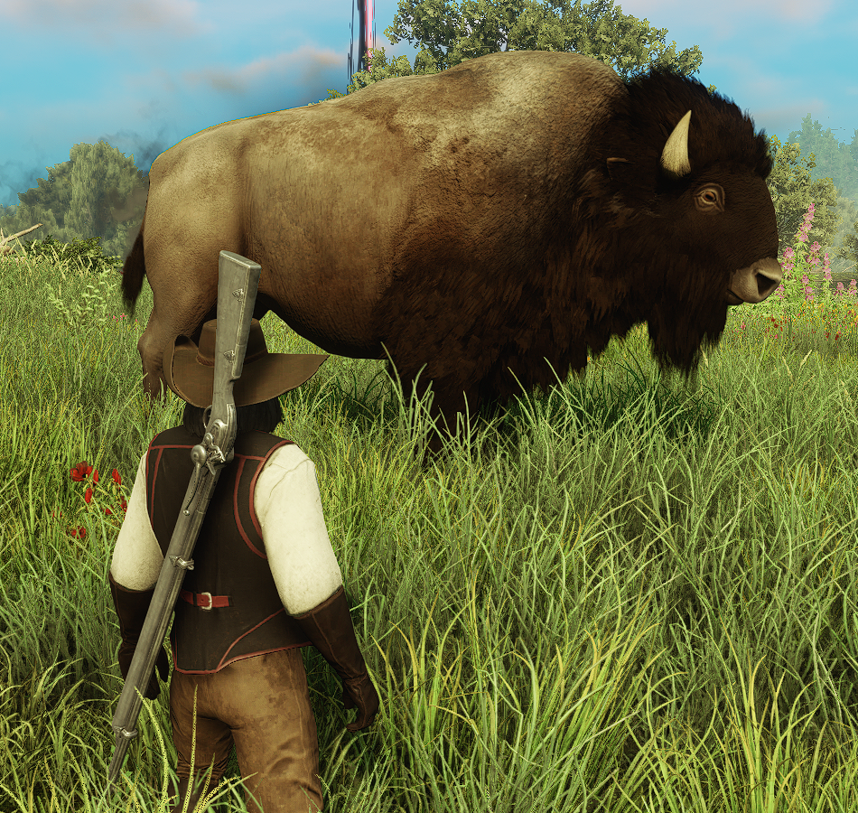

Bisões geralmente são encontrados em planícies no centro de Aeternumm ou em regiões isoladas do norte. Apesar de seu tamanho, mesmo quando atacado apenas costuma derrubar a pessoa e fugir
Sua carne não tem muito segredo nem muito luxo, geralmente é apenas assada e temperada.